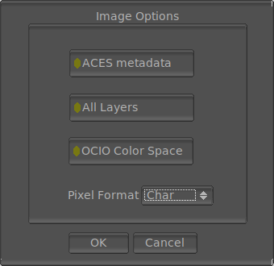

The File Save ImageMagick Options

The File Save ImageMagick/OpenImageIO options allows you to select options of how mrViewer saves the formats supported by ImageMagick/OIIO. The most common formats would be PNG, TIFF and Photoshop PSD. The window appears whenever you try to save a format supported by imagemagick or openimageio (determined by its extension).
The Mip-Map option is only active when saving a .tx file with OpenImageIO. It allows saving a texture mipmap of the image or sequence getting saved.
Some formats of ImageMagick support multiple layers and selecting saving all layers will allow you to save all layers of the image loaded. Currently, the formats that support multiple layers are TIFF, MIFF and PSD. If you select a format that does not support layers like PNG, you will get additional images saved for each layer.
The OCIO Color Space option allows you to bake in the OCIO color space in the image getting saved.
Here you can also select the pixel depth, which can be char, short, float or double. While not all formats support all depths, char and short are pretty common.